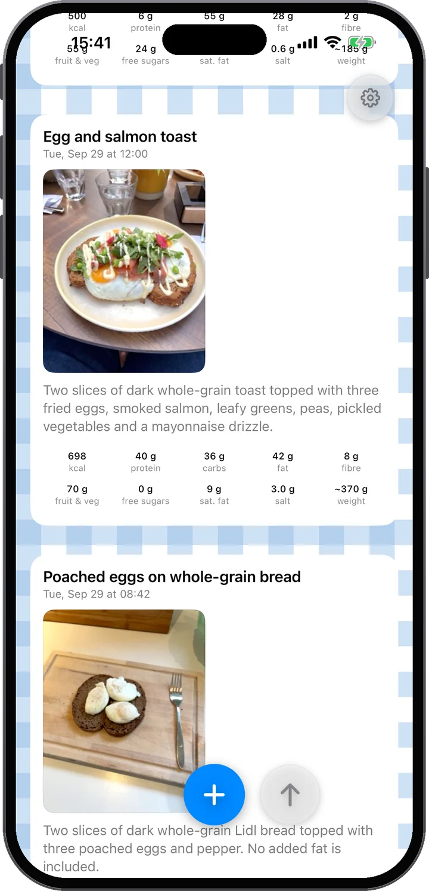

Captura. Mira. Entiende. Elige.
Casi ningún esfuerzo — y mucha comprensión a cambio.
Captura
Fotografía tu comida — una foto o varias. Luego añade contexto: escribe una nota o mantén pulsado el micrófono y habla. «Dos huevos fritos y el panecillo pequeño» es todo lo que hace falta.
Mira
La comida se analiza por ti: energía, proteína, hidratos, grasa, fibra, fruta y verdura, azúcares libres y sal, plato por plato, y dice con franqueza qué seguridad hay — y ve cómo encaja en tu día.
Entiende
A lo largo del día tu feed se llena y las barras avanzan. Ves cómo evoluciona tu día de comida y dónde estás — antes de elegir la siguiente comida, no después.
Elige
¿Has ido bien todo el día? Tus barras lo mostrarán. Así que tómate el postre — y siéntete bien: sigues dentro del objetivo, y lo dicen tus propios datos, no una suposición.

Primero, las fotos
Empieza haciendo fotos.
La foto es la fuente principal. El análisis lee los platos y las porciones — incluso una etiqueta nutricional o un código de barras si aparece en la imagen. Y no tiene que ser una sola foto: una comida puede tener hasta diez. ¿Cocinas esta noche? Fotografía los ingredientes sobre la marcha y luego el plato terminado — el análisis lo junta todo.
Añade lo que las fotos no muestran — cuanto más digas, mejor la estimación: cuánto era, qué lleva, contundente o ligero.
Luego, tus palabras — a tu manera
Dilo. O escríbelo.
A menudo las fotos ya bastan. Cuando no — qué llevaba el batido, cuánto de la sartén comiste en realidad — añade contexto con tus propias palabras. Si te gusta escribir, escribe. Pero prueba el micrófono: el dictado funciona con los últimos modelos de voz, coloca tus palabras en la nota un instante después de soltar y aguanta incluso en una calle ruidosa. En cualquier caso, tus palabras siempre pesan más que la foto — la app te escucha a ti.
Ensalada de pollo, una rebanada de pan de masa madre con mantequilla y medio vaso de zumo de naranja.
Los platos y bebidas que componen la comida. Desliza uno para quitarlo, mantén pulsado para reordenar — cualquier otra corrección va por Feedback.
La comida estaba clara; cuánta había hubo que deducirlo de las fotos. Toma los números como aproximados y no exactos — decir la cantidad los afina.
Nutrición más allá de las calorías
Las calorías son solo el principio.
Cada Food Moment se desglosa como lo haría una carta — cada plato y bebida con su propia porción y sus números, sumados en totales: energía, proteína, hidratos, grasa, fibra, fruta y verdura, azúcares libres, sal y un peso estimado. Y la app te dice honestamente qué confianza tiene — para que sepas cuándo una nota hablada rápida afinaría la estimación.

Tu feed personal
Una comida es un momento. Tus Food Moments cuentan la historia.
Tus comidas, bebidas y tentempiés aparecen a lo largo del día — fotos primero, como un feed personal visto a través de la nutrición. Arriba, la tarjeta del día lleva el marcador: cada barra compara lo que has comido hasta ahora con los objetivos de todo el día. Una barra baja por la mañana no es un fracaso — es margen.